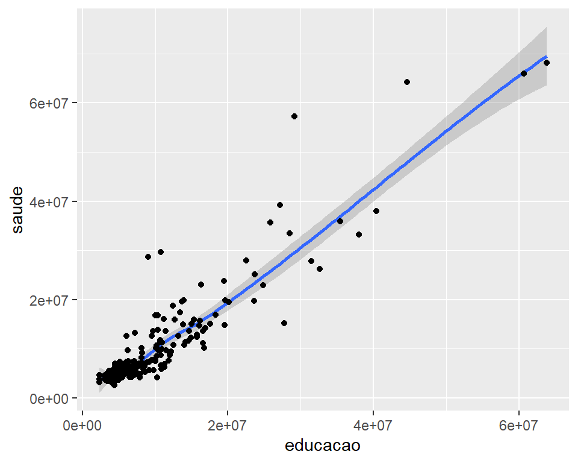

Transformando Dados em Informações
Usando R nas Ciências Sociais
Dr Robson Oliveira
IFPB
O Que é R?
O que vamos apresentar

O que vamos apresentar

Pré-Requisitos
- Baixar e instalar R em https://cloud.r-project.org/

- Instalar o RStudio: https://www.rstudio.com

- Instalar os pacotes necessários

O Básico
Rodando Código no R
Rodando Código no R
Rodando Código no R
Criando objetos com <-
Criando objetos com <-
Chamando Funções
R tem uma série de funções. Por exemplo, para criar uma sequência de números entre 1 e 10, usamos a função seq():
Chamando Funções
Sempre chamamos uma função da seguinte forma:
Chamando Funções
Exemplos:
Chamando Funções
Exemplos:
Criando objetos com <-
Sempre atribuimos da mesma forma:
Criando objetos com <-
Sempre atribuimos da mesma forma:
Dica: Podemos ler o código acima como “estamos salvando o valor como nome_objeto”.
Nome de objetos
Nome de objetos precisam:
Começar com letras
Conter letras, números,
_e.Ser descritivo
Recomendo separar palavras com
_:sequencia_entre_1_10
Nome de objetos
Nome de objetos
Banco de dados
Um tipo especial de objeto é o data.frame:
Banco de dados
Um tipo especial de objeto é o data.frame:
mpg cyl disp hp drat wt qsec vs am gear carb
Mazda RX4 21.0 6 160.0 110 3.90 2.620 16.46 0 1 4 4
Mazda RX4 Wag 21.0 6 160.0 110 3.90 2.875 17.02 0 1 4 4
Datsun 710 22.8 4 108.0 93 3.85 2.320 18.61 1 1 4 1
Hornet 4 Drive 21.4 6 258.0 110 3.08 3.215 19.44 1 0 3 1
Hornet Sportabout 18.7 8 360.0 175 3.15 3.440 17.02 0 0 3 2
Valiant 18.1 6 225.0 105 2.76 3.460 20.22 1 0 3 1
Duster 360 14.3 8 360.0 245 3.21 3.570 15.84 0 0 3 4
Merc 240D 24.4 4 146.7 62 3.69 3.190 20.00 1 0 4 2
Merc 230 22.8 4 140.8 95 3.92 3.150 22.90 1 0 4 2
Merc 280 19.2 6 167.6 123 3.92 3.440 18.30 1 0 4 4
Merc 280C 17.8 6 167.6 123 3.92 3.440 18.90 1 0 4 4
Merc 450SE 16.4 8 275.8 180 3.07 4.070 17.40 0 0 3 3
Merc 450SL 17.3 8 275.8 180 3.07 3.730 17.60 0 0 3 3
Merc 450SLC 15.2 8 275.8 180 3.07 3.780 18.00 0 0 3 3
Cadillac Fleetwood 10.4 8 472.0 205 2.93 5.250 17.98 0 0 3 4
Lincoln Continental 10.4 8 460.0 215 3.00 5.424 17.82 0 0 3 4
Chrysler Imperial 14.7 8 440.0 230 3.23 5.345 17.42 0 0 3 4
Fiat 128 32.4 4 78.7 66 4.08 2.200 19.47 1 1 4 1
Honda Civic 30.4 4 75.7 52 4.93 1.615 18.52 1 1 4 2
Toyota Corolla 33.9 4 71.1 65 4.22 1.835 19.90 1 1 4 1
Toyota Corona 21.5 4 120.1 97 3.70 2.465 20.01 1 0 3 1
Dodge Challenger 15.5 8 318.0 150 2.76 3.520 16.87 0 0 3 2
AMC Javelin 15.2 8 304.0 150 3.15 3.435 17.30 0 0 3 2
Camaro Z28 13.3 8 350.0 245 3.73 3.840 15.41 0 0 3 4
Pontiac Firebird 19.2 8 400.0 175 3.08 3.845 17.05 0 0 3 2
Fiat X1-9 27.3 4 79.0 66 4.08 1.935 18.90 1 1 4 1
Porsche 914-2 26.0 4 120.3 91 4.43 2.140 16.70 0 1 5 2
Lotus Europa 30.4 4 95.1 113 3.77 1.513 16.90 1 1 5 2
Ford Pantera L 15.8 8 351.0 264 4.22 3.170 14.50 0 1 5 4
Ferrari Dino 19.7 6 145.0 175 3.62 2.770 15.50 0 1 5 6
Maserati Bora 15.0 8 301.0 335 3.54 3.570 14.60 0 1 5 8
Volvo 142E 21.4 4 121.0 109 4.11 2.780 18.60 1 1 4 2Banco de dados
Para trabalharmos com dados no R, eles precisam estar em um formato tidy:

Importar Dados

Importando dados de despesas municipais (Paraíba) usando a função read_csv():
Importando dados de despesas municipais (Paraíba) usando a função read_csv():
Importando dados de despesas municipais (Paraíba) usando a função read_csv():
# A tibble: 355,142 × 6
ano municipio conta despesas_empenh… despesas_liquid… despesas_pagas
<dbl> <chr> <chr> <dbl> <dbl> <dbl>
1 2005 Água Branca Abastecim… 0 NA NA
2 2005 Água Branca Ação Judi… 0 NA NA
3 2005 Água Branca Ação Legi… 27679. NA NA
4 2005 Água Branca Administr… 734413. NA NA
5 2005 Água Branca Administr… 0 NA NA
6 2005 Água Branca Administr… 0 NA NA
7 2005 Água Branca Administr… 72369. NA NA
8 2005 Água Branca Administr… 615539. NA NA
9 2005 Água Branca Agricultu… 98226. NA NA
10 2005 Água Branca Álcool 0 NA NA
# … with 355,132 more rowsTransformação de dados

Verbos do dplyr
filter()filtra apenas observações com valores específicosarrange()reordena as linhas da baseselect()seleciona apenas variáveis de interessemutate()cria novas variáveis como função das demaissummarise()cria estatísticas descritivas
Filtrar dados com filter

Funcionamento da função filter()
Se quisermos filtrar as despesas dos municípios para o ano de 2020:
# A tibble: 8,416 × 6
ano municipio conta despesas_empenh… despesas_liquid… despesas_pagas
<dbl> <chr> <chr> <dbl> <dbl> <dbl>
1 2020 Água Branca Ação Legi… 955491. 955491. 955491.
2 2020 Água Branca Administr… 2817531. 2817531. 2817531.
3 2020 Água Branca Administr… 1119820. 1119820. 1119820.
4 2020 Água Branca Administr… 2912672. 2910913. 2910913.
5 2020 Água Branca Agricultu… 1007174. 1007174. 1007174.
6 2020 Água Branca Assistênc… 314001. 313501. 313501.
7 2020 Água Branca Assistênc… 824082. 824082. 823932.
8 2020 Água Branca Assistênc… 3673068. 3673068. 3635468.
9 2020 Água Branca Assistênc… 1138083. 1137583. 1137433.
10 2020 Água Branca Atenção B… 5688206. 5688206. 5677949.
# … with 8,406 more rowsSe quisermos filtrar as despesas dos municípios para o ano de 2020 e para o município de João Pessoa:
# A tibble: 80 × 6
ano municipio conta despesas_empenh… despesas_liquid… despesas_pagas
<dbl> <chr> <chr> <dbl> <dbl> <dbl>
1 2020 João Pessoa Administr… 274470039. 267409380. 266825012.
2 2020 João Pessoa Administr… 24393906. 24393906. 24393906.
3 2020 João Pessoa Administr… 5886106. 5886106. 5886085.
4 2020 João Pessoa Administr… 576784503. 567150258. 566412083.
5 2020 João Pessoa Assistênc… 10212105. 9658881. 9657681.
6 2020 João Pessoa Assistênc… 8236. 8168. 8168.
7 2020 João Pessoa Assistênc… NA NA NA
8 2020 João Pessoa Assistênc… 18842495. 18424873. 18408734.
9 2020 João Pessoa Assistênc… 322414670. 283332615. 282052325
10 2020 João Pessoa Assistênc… 30484971. 29514057. 29492558.
# … with 70 more rowsPipe |>
O pipe |> é um operador que permite reescrever as expressões de outra forma. Dica: Leia o pipe como um ENTÃO:

# A tibble: 80 × 6
ano municipio conta despesas_empenh… despesas_liquid… despesas_pagas
<dbl> <chr> <chr> <dbl> <dbl> <dbl>
1 2020 João Pessoa Administr… 274470039. 267409380. 266825012.
2 2020 João Pessoa Administr… 24393906. 24393906. 24393906.
3 2020 João Pessoa Administr… 5886106. 5886106. 5886085.
4 2020 João Pessoa Administr… 576784503. 567150258. 566412083.
5 2020 João Pessoa Assistênc… 10212105. 9658881. 9657681.
6 2020 João Pessoa Assistênc… 8236. 8168. 8168.
7 2020 João Pessoa Assistênc… NA NA NA
8 2020 João Pessoa Assistênc… 18842495. 18424873. 18408734.
9 2020 João Pessoa Assistênc… 322414670. 283332615. 282052325
10 2020 João Pessoa Assistênc… 30484971. 29514057. 29492558.
# … with 70 more rowsFunção select()

Podemos selecionar apenas as variáveis desejadas, como ano, município, conta e despesas empenhadas:
# A tibble: 355,142 × 4
ano municipio conta despesas_empenhadas
<dbl> <chr> <chr> <dbl>
1 2005 Água Branca Abastecimento 0
2 2005 Água Branca Ação Judiciária 0
3 2005 Água Branca Ação Legislativa 27679.
4 2005 Água Branca Administração 734413.
5 2005 Água Branca Administração de Concessões 0
6 2005 Água Branca Administração de Receitas 0
7 2005 Água Branca Administração Financeira 72369.
8 2005 Água Branca Administração Geral 615539.
9 2005 Água Branca Agricultura 98226.
10 2005 Água Branca Álcool 0
# … with 355,132 more rowsPodemos usar o |> para concatenar filter() e select():
# A tibble: 220 × 2
municipio despesas_empenhadas
<chr> <dbl>
1 Água Branca 10651712.
2 Aguiar 7059565.
3 Alagoa Grande 20666011.
4 Alagoa Nova 12241806.
5 Alagoinha 10179579.
6 Alcantil 6765119.
7 Alhandra 24493996.
8 Amparo 3787946.
9 Aparecida 5900023.
10 Araçagi 12576494.
# … with 210 more rowsFunção arrange()

Note que a tabela está ordenada por nome do município. E se quisermos ordenar por valor?
# A tibble: 220 × 2
municipio despesas_empenhadas
<chr> <dbl>
1 Água Branca 10651712.
2 Aguiar 7059565.
3 Alagoa Grande 20666011.
4 Alagoa Nova 12241806.
5 Alagoinha 10179579.
6 Alcantil 6765119.
7 Alhandra 24493996.
8 Amparo 3787946.
9 Aparecida 5900023.
10 Araçagi 12576494.
# … with 210 more rowsNote que a tabela está ordenada por nome do município. E se quisermos ordenar por valor?
# A tibble: 220 × 2
municipio despesas_empenhadas
<chr> <dbl>
1 Joca Claudino 3157430.
2 Coxixola 3265783.
3 Carrapateira 3323506.
4 São José do Brejo do Cruz 3410302.
5 Zabelê 3541968.
6 São José do Bonfim 3543451.
7 Santo André 3654349.
8 São Domingos do Cariri 3710854.
9 Caraúbas 3766775.
10 Amparo 3787946.
# … with 210 more rowsNote que a tabela está ordenada por nome do município. E se quisermos ordenar por valor?
# A tibble: 220 × 2
municipio despesas_empenhadas
<chr> <dbl>
1 João Pessoa 765849157.
2 Campina Grande 405886878.
3 Cabedelo 70257925.
4 Patos 69975229.
5 Santa Rita 69463831.
6 Sousa 58499401.
7 Bayeux 47621883.
8 Guarabira 39262438.
9 Cajazeiras 38091615.
10 Monteiro 37189917.
# … with 210 more rowsFunção mutate()

Na função mutate() especifique o nome da nova variável e após o sinal de = indique a transformação que deseja realizar:
Podemos criar uma variável chamada restos_a_pagar_processadas que são as dispesas liquidadas e não pagas.
Podemos criar uma variável chamada restos_a_pagar_processadas que são as dispesas liquidadas e não pagas.
Podemos criar uma variável chamada restos_a_pagar_processadas que são as dispesas liquidadas e não pagas.
# vamos filtrar apenas para gastos de saúde em 2020
despesas |>
filter(ano == 2020, conta == "Saúde") |>
# e criar a variável de restos a pagar com mutate()
mutate(restos_a_pagar_processadas = despesas_liquidadas - despesas_pagas) |>
# para facilitar a visualização das informações, vamos usar select e arrange:
select(municipio, restos_a_pagar_processadas) |> arrange(desc(restos_a_pagar_processadas))# A tibble: 220 × 2
municipio restos_a_pagar_processadas
<chr> <dbl>
1 Campina Grande 20262693.
2 Bayeux 5360486.
3 Cabedelo 4011032.
4 Patos 3542946.
5 Piancó 2487771.
6 Cajazeiras 2093749.
7 Princesa Isabel 1874255.
8 Monteiro 1499373.
9 João Pessoa 1433962.
10 São Bento 1308499.
# … with 210 more rowsFunção summarise()

O último verbo do
dplyré osummarise()Ele colapsa os dados (resume_ em uma única linha
O objetivo é criar medidas como média, medianas, totais e outros.
Para obter o total empenhado com saúde em 2020 podemos:
# A tibble: 220 × 6
ano municipio conta despesas_empenhadas despesas_liquid… despesas_pagas
<dbl> <chr> <chr> <dbl> <dbl> <dbl>
1 2020 Água Branca Saúde 10651712. 10651712. 10603855.
2 2020 Aguiar Saúde 7059565. 7026049. 7023235.
3 2020 Alagoa Grande Saúde 20666011. 20664904. 19749257.
4 2020 Alagoa Nova Saúde 12241806. 12236205. 11706564.
5 2020 Alagoinha Saúde 10179579. 10179574. 9928526.
6 2020 Alcantil Saúde 6765119. 6765119. 6747412.
7 2020 Alhandra Saúde 24493996. 24481423. 23771838.
8 2020 Amparo Saúde 3787946. 3787946. 3772046.
9 2020 Aparecida Saúde 5900023. 5900023. 5762441.
10 2020 Araçagi Saúde 12576494. 12576494. 12576494.
# … with 210 more rowsPara obter o total gasto com saúde em 2020 podemos:
Se quisermos saber o valor médio empenhado, só substituir a função sum() por mean():
Função group_by()

summarise()é mais útil quando usamos em conjunto comgroup_by()group_by()muda a unidade de análise da base de dados completa para grupos de observaçõesPor exemplo, podemos estar interessado no gasto médio de saúde para cada ano
# A tibble: 16 × 2
ano total_empenhos
<dbl> <dbl>
1 2005 3113092.
2 2006 3460539.
3 2007 3854262.
4 2008 4942897.
5 2009 5323783.
6 2010 6069585.
7 2011 7537248.
8 2012 9008342.
9 2013 9336262.
10 2014 10189426.
11 2015 9816617.
12 2016 11022147.
13 2017 11404574.
14 2018 12456050.
15 2019 12796057.
16 2020 15819436.Salvando Resultados
Para que as transformações feitas nos dados sejam reutilizadas, podemos salvar o resultado como um objeto com o operador <-:
Salvando Resultados
E agora podemos ver o que foi feito acima:
# A tibble: 16 × 2
ano total_empenhos
<dbl> <dbl>
1 2005 3113092.
2 2006 3460539.
3 2007 3854262.
4 2008 4942897.
5 2009 5323783.
6 2010 6069585.
7 2011 7537248.
8 2012 9008342.
9 2013 9336262.
10 2014 10189426.
11 2015 9816617.
12 2016 11022147.
13 2017 11404574.
14 2018 12456050.
15 2019 12796057.
16 2020 15819436.Visualização

Antes de criar o primeiro gráfico, vamos modificar o banco de dados para mostrar gastos com saúde e educação em 2020:
despesas_saude_educacao <- despesas |>
filter(ano == 2020, conta == 'Saúde' | conta == 'Educação') |>
filter(municipio != "João Pessoa" & municipio != "Campina Grande") |>
select(ano, municipio, conta, despesas_pagas) |>
# essas funções são um pouco mais avançadas. Mas não se preocupe por enquanto.
pivot_wider(names_from = "conta", values_from = "despesas_pagas") |>
janitor::clean_names()Vamos criar nosso primeiro gráfico:
Vamos criar nosso primeiro gráfico:
Vamos criar nosso primeiro gráfico:


Geometrias

geom é o objeto geométrico que um gráfico usa para representar dados.
Gráficos de barras são construídos com
geom_bar.Gráficos de linhas são construídos com
geom_line.Assim, para mudar a geometria, só alterar o termo
geom_*.
geom_point()

geom_smooth()

Múltiplos geom_*

geom_hist

Modelar
Comunicar
Relatórios
Análise de Dados (Nosso foco hoje)